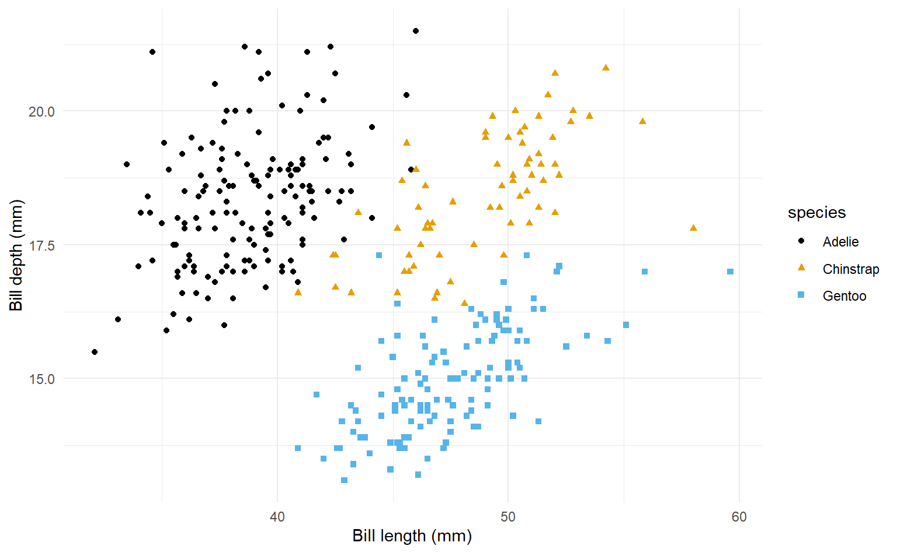

Farm Store and Penguins
Get Started with Quarto
Farm Store
CPP Farm store has a selected assortment of cool fruits and vegetables right from its on-campus farm.
Featured Products
Illustration of Multiple columns on a website


Great gift for your loved ones. These fruits were raised by students in agriculture majors on CPP campus, processed and packed by student employees at Farm Store.
Fantastic wine produced right here CPP campus by students!
Products
Use panel-tabset to add multiple tabs to your website.
For the beautiful graphic of fruit gift pack, see Figure 1.
Data Preparation
First, we need to:
- load packages
- read in data
- check if that data is in the right format
By “right format”, we mean that the data is tidy, and ready to be summarized and graphed
Choosing Data
Penguins are very cute!
… so let’s work with penguin data today.
Note
For this analysis we will use the penguins dataset from the palmerpenguins package (Gorman, Williams, and Fraser 2014).
Using the data without downloading it
Data were collected and made available by Dr. Kristen Gorman and the Palmer Station, Antarctica LTER, a member of the Long Term Ecological Research Network.
Loading packages and reading data
Using the data without downloading it
This same dataset is also available in the palmerpenguins package
Reading Data
# A tibble: 6 × 8
species island bill_length_mm bill_depth_mm flipper_length_mm body_mass_g
<fct> <fct> <dbl> <dbl> <int> <int>
1 Adelie Torgersen 39.1 18.7 181 3750
2 Adelie Torgersen 39.5 17.4 186 3800
3 Adelie Torgersen 40.3 18 195 3250
4 Adelie Torgersen NA NA NA NA
5 Adelie Torgersen 36.7 19.3 193 3450
6 Adelie Torgersen 39.3 20.6 190 3650
# ℹ 2 more variables: sex <fct>, year <int>Inspecting data
Rows: 344
Columns: 8
$ species <fct> Adelie, Adelie, Adelie, Adelie, Adelie, Adelie, Adel…
$ island <fct> Torgersen, Torgersen, Torgersen, Torgersen, Torgerse…
$ bill_length_mm <dbl> 39.1, 39.5, 40.3, NA, 36.7, 39.3, 38.9, 39.2, 34.1, …
$ bill_depth_mm <dbl> 18.7, 17.4, 18.0, NA, 19.3, 20.6, 17.8, 19.6, 18.1, …
$ flipper_length_mm <int> 181, 186, 195, NA, 193, 190, 181, 195, 193, 190, 186…
$ body_mass_g <int> 3750, 3800, 3250, NA, 3450, 3650, 3625, 4675, 3475, …
$ sex <fct> male, female, female, NA, female, male, female, male…
$ year <int> 2007, 2007, 2007, 2007, 2007, 2007, 2007, 2007, 2007…Cleaning Data
# A tibble: 333 × 8
species island bill_length_mm bill_depth_mm flipper_length_mm body_mass_g
<fct> <fct> <dbl> <dbl> <int> <int>
1 Adelie Torgersen 39.1 18.7 181 3750
2 Adelie Torgersen 39.5 17.4 186 3800
3 Adelie Torgersen 40.3 18 195 3250
4 Adelie Torgersen 36.7 19.3 193 3450
5 Adelie Torgersen 39.3 20.6 190 3650
6 Adelie Torgersen 38.9 17.8 181 3625
7 Adelie Torgersen 39.2 19.6 195 4675
8 Adelie Torgersen 41.1 17.6 182 3200
9 Adelie Torgersen 38.6 21.2 191 3800
10 Adelie Torgersen 34.6 21.1 198 4400
# ℹ 323 more rows
# ℹ 2 more variables: sex <fct>, year <int>We have removed missing values here, which means that the data has now 333 rows. Note that previously there were 344 rows in the original data.1
Code Annotation
library(tidyverse)
library(palmerpenguins)
penguins |>
mutate(
bill_ratio = bill_depth_mm / bill_length_mm,
bill_area = bill_depth_mm * bill_length_mm
)- 1
-
Take
penguins, and then, - 2
- add new columns for hte bill ratio and bill area.
Charts by Species
Figure 3 is a bar plot of species of penguins.
Charts by Species

Tables
Table 1 shows the first 10 penguins from the dataset.
| species | island | bill_length_mm | bill_depth_mm |
|---|---|---|---|
| Adelie | Torgersen | 39.1 | 18.7 |
| Adelie | Torgersen | 39.5 | 17.4 |
| Adelie | Torgersen | 40.3 | 18.0 |
| Adelie | Torgersen | 36.7 | 19.3 |
| Adelie | Torgersen | 39.3 | 20.6 |
| Adelie | Torgersen | 38.9 | 17.8 |
| Adelie | Torgersen | 39.2 | 19.6 |
| Adelie | Torgersen | 41.1 | 17.6 |
| Adelie | Torgersen | 38.6 | 21.2 |
| Adelie | Torgersen | 34.6 | 21.1 |
How to post online
Create your content in Quarto. You need at least three documents
index.qmd
another qmd file
“_quarto.yml” created in Text File.
Reload the4 project from the upper-right-hand corner. After this, you should see the “build” tab appear next to the environment tab.
Click “Render website” and confirm that you have a website with all the files combined.
Now it is time to publish
Move to the terminal next to “Console” tab.
Type “quarto publish quarto-pub” and follow the instructions on the pane.
Go to your quarto-pub website and find it.
Resources
- Authoring: https://quarto.org/docs/authoring/markdown-basics.html
- Creating a website: https://quarto.org/docs/websites/
- Quarto Gallery
- Get started with Quarto | Mine Cetinkaya-Rundel:
- Quarto for Academics | Mine Çetinkaya-Rundel:
References

DMC Program Project